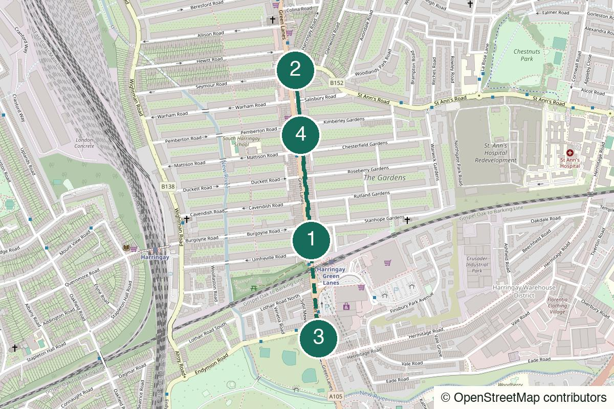

London Not yet field-walked
Crystal Palace
Views, eccentric park details and a pub finish that earns itself.
Start Crystal Palace
Not yet field-walked · verify live details
A Victorian pub, Turkish grills and a long, lively street that still behaves like a neighbourhood.
Walked it? A field note keeps the route current.
Harringay Green Lanes Overground – Come out onto Green Lanes.
The Salisbury Hotel
Open the whole walk (opens in a new tab)
Confirm pub hours, restaurant booking policy and the final walk.
We never ask for your location.
Start in a room grand enough to reset the tone, then let Green Lanes do the rest. The street itself is the walk; dinner is the anchor, not a reward for completing it.
Not quiet, not polished and not a place to expect a table the second you want one.
Better for an established date than a tentative first meeting: it is loud, generous and easier when both people want to eat.
Excellent for two to four people who enjoy sharing dishes and a busy street.
Possible, though the food rhythm is strongest with someone to share it.

Harringay Green Lanes Overground, London N4
From the start Exit onto Green Lanes, then walk south towards Grand Parade.
A useful start because it avoids turning the evening into another trip through central London.
1 Grand Parade, Green Lanes, London N4 1RN
From the previous stop Continue south on Green Lanes to Grand Parade.
A vast Victorian gin palace of etched glass, dark wood and tall ceilings. One first drink is enough; check hours before relying on it.
Green Lanes, Harringay, London N4
From the previous stop Continue south slowly, keeping the Turkish bakeries and grocers as the route rather than a distraction from it.
Walk the street rather than rushing through it; buy baklava for tomorrow if the moment presents itself.
26–28 Grand Parade, Green Lanes, London N4 1LG
From the previous stop Use the live pin for the restaurant entrance. If it is too busy, try Diyarbakır Kitchen further down Green Lanes instead.
The bright, generous default: order from the coals and share everything. Check current wait and booking policy before setting off.
Nearest practical station: Harringay Green Lanes or Manor House
Return north for Harringay Green Lanes, or use Manor House at the north end for the Piccadilly line.
Early evening
Dinner is the point. Verify the queue or booking policy, then order over the coals and share.
One drink and a shorter walk, with dinner left deliberately optional.
The full food-first version.
Make the Salisbury and restaurant the route; keep the street walk short and practical.
Stay on Green Lanes for dessert rather than crossing London for a second plan.
Leave after the first drink, or end after a bakery stop and return to the Overground.
Help keep it useful
Closed gates, changed hours and the point where you bailed are more useful than polite applause.